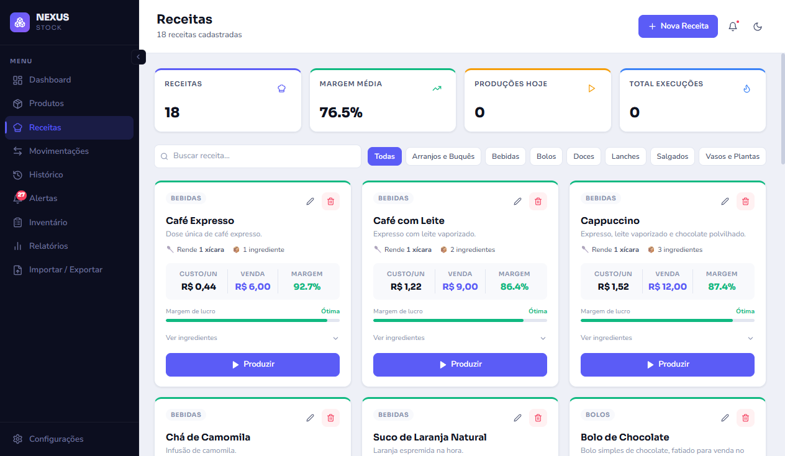
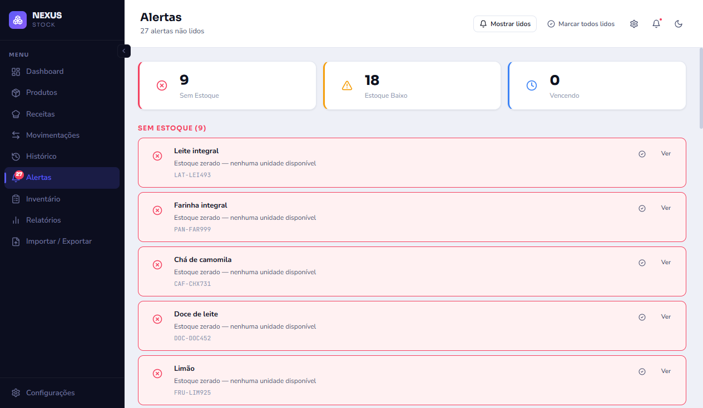
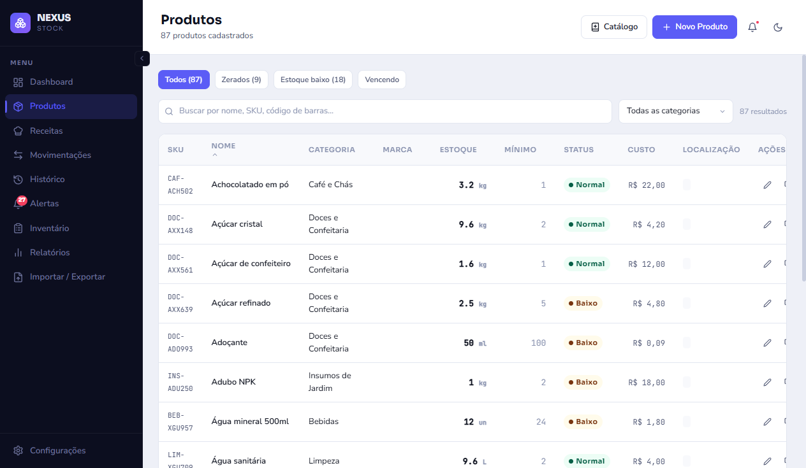
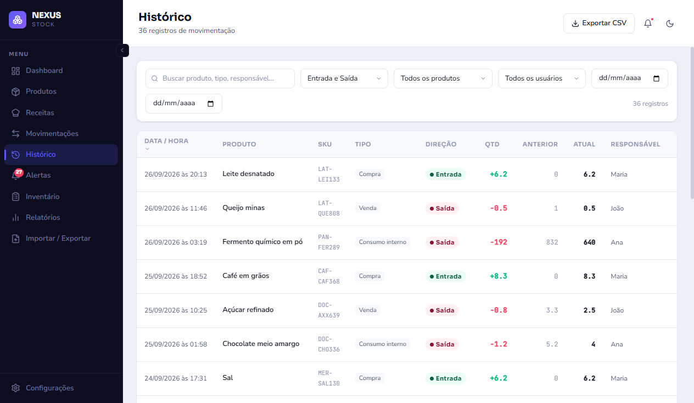

Saiba quanto sobrou no estoque — e quanto cada receita realmente rende.
Cadastre produtos e receitas. O sistema calcula custo e margem e avisa antes de faltar.
Criado e usado no dia a dia de uma cafeteria com floricultura.
Para Windows · funciona sem internet · adesão única

Tela real do programa (dados de exemplo): custo, preço e margem de cada receita.Se isso acontece na sua loja, o Nexus Stock é para você
“Acho que tem, mas não sei quanto.”
Ninguém confia na contagem de cabeça. O sistema mostra o saldo de cada produto na hora.
Faltou o que mais vende
Só se descobre com o cliente na frente. Aqui o alerta de estoque baixo chega antes.
Vende bem e sobra pouco
Uma margem de 26% parece boa até descontar aluguel, funcionário e perdas. Com o custo real de cada receita, você enxerga onde está perdendo.
O que você ganha
Receitas com custo e margem
Monte cada receita com seus ingredientes. Ao produzir, o estoque dos ingredientes baixa sozinho, e o sistema avisa se algum não for suficiente.
Entradas, saídas e histórico
Todo movimento fica registrado: quem fez, quando e por quê. Não deixa sair mais do que existe em estoque.
Alertas de estoque
Aviso de produto acabando ou zerado, com o mínimo que você define para cada item.
Inventário
Conte o estoque físico, veja as diferenças e aplique o ajuste com um clique.
Relatórios
Painel com o resumo do estoque e relatórios para acompanhar o que entra, o que sai e o que rende.
Catálogo pronto
Já vem com uma lista de produtos e receitas de cafeteria e floricultura para você só ajustar os custos.
Veja por dentro
Telas reais do programa, com dados de exemplo.



Seus dados ficam com você
Sem internet e sem mensalidade obrigatória
Instala no computador da loja e pronto. Não depende de conexão, não tem conta para criar e não exige cobrança mensal.
Backup automático
O sistema guarda cópias sozinho na pasta Documentos, fáceis de levar num pendrive, e você pode conferir se o último backup está íntegro com um clique.
Mais de um computador na loja?
Um computador guarda os dados e os outros abrem o sistema pelo navegador, na rede da loja. Sem instalar nada nos outros e sem internet.
- Protegido por senha: só entra quem você autorizar.
- Se duas pessoas abrem a mesma tela, só a primeira edita. A outra apenas visualiza, sem risco de um apagar o trabalho do outro.
- As mudanças de um computador aparecem nos outros em poucos segundos.
Quem fez
Nasceu de um problema real: controlar estoque e custo das receitas de uma cafeteria com floricultura. Feito por um desenvolvedor independente que usa o programa na loja todo dia.
- Suporte direto comigo, pelo WhatsApp, sem central de atendimento.
- Atualizações vitalícias e 30 dias de suporte por WhatsApp incluídos na adesão.
- Depois disso, você escolhe: suporte mensal de R$ 49 ou R$ 39 por chamado, só quando precisar.
Como funciona
Teste 15 dias
Chame no WhatsApp: instalo junto com você, por acesso remoto e sem custo.
Cadastre e use
Use o catálogo pronto ou cadastre o seu. Ajuste os custos na primeira compra.
Ative a licença
Gostou? Você recebe uma chave e o sistema fica liberado para sempre.
Adesão única. Suporte só se você quiser.
Pague a adesão uma vez e use para sempre. Os primeiros 30 dias de suporte já estão incluídos; depois, o suporte é opcional.
pagamento único · você só paga depois do teste, se gostar · forma de pagamento combinada no WhatsApp
- 15 dias de teste grátis
- Todas as funções incluídas
- Modo rede para vários computadores
- Instalação assistida gratuita, por acesso remoto
- Atualizações vitalícias
- 30 dias de suporte por WhatsApp incluídos
Suporte mensal
- Chamados ilimitados no WhatsApp, a qualquer hora, inclusive fim de semana
- Resposta prioritária, na frente dos demais chamados
- Ajuda com dúvidas, restauração de backup e problemas do programa
Começa depois dos 30 dias incluídos. Contrate quando quiser, junto com a adesão ou depois.
Quanto fica, no total
- Só a adesão: R$ 297 hoje. Se precisar de ajuda depois dos 30 dias incluídos, R$ 39 por chamado (horário comercial, seg a sex, 9h às 18h).
- Adesão + suporte mensal: R$ 297 hoje e R$ 49/mês a partir do 2º mês. No primeiro ano, R$ 836 no total (R$ 297 + 11 × R$ 49).
O plano mensal compensa a partir de 2 chamados por mês. Uma situação é um chamado: perguntas de acompanhamento sobre o mesmo assunto em até 7 dias não são cobradas de novo. Defeito do programa nunca é cobrado.
Perguntas frequentes
O que acontece depois da compra?
Você recebe a chave de licença, que libera o programa para sempre no nome da sua loja. As atualizações são vitalícias e os primeiros 30 dias de suporte por WhatsApp já estão incluídos na adesão. Depois, o suporte é opcional: R$ 49/mês no plano mensal ou R$ 39 por chamado, só quando precisar.
O que inclui o suporte mensal?
Chamados ilimitados no WhatsApp, a qualquer hora, inclusive fim de semana, com resposta prioritária. Cobre dúvidas de uso, restauração de backup e problemas do programa. Não é um prazo garantido de resolução, mas a prioridade é sua.
E se eu não contratar o suporte mensal?
Tudo bem: o programa continua seu para sempre. Se precisar de ajuda depois dos 30 dias incluídos, cada chamado custa R$ 39, com atendimento em horário comercial (seg a sex, 9h às 18h). Uma situação é um chamado: perguntas de acompanhamento sobre o mesmo assunto em até 7 dias não são cobradas de novo. O plano mensal compensa a partir de 2 chamados por mês.
Se der defeito no programa, eu pago pelo atendimento?
Não. Defeito do programa nunca é cobrado, nem durante nem depois dos 30 dias, com ou sem plano. A cobrança vale para dúvidas de uso, ajuda com configuração, reinstalação e restauração de backup.
Roda no meu computador?
Precisa de Windows 10 ou 11 (64 bits). Funciona em notebook simples de balcão; recomendo 4 GB de RAM. Se tiver dúvida, o teste de 15 dias mostra na prática.
Preciso de internet?
Não. O sistema funciona inteiro sem conexão. Só é preciso rede local se você quiser usar em mais de um computador.
Funciona em Mac ou celular?
O programa é para Windows. Em outros computadores da mesma rede, dá para abrir pelo navegador usando o modo rede.
E se o computador quebrar?
O backup automático grava cópias em Documentos\Estoque\backups. Copie para um pendrive de vez em quando e restaure em qualquer computador.
Os meus dados vão para a internet?
Não. Tudo fica no computador da loja. Não há conta, nuvem nem envio de informações.
O Windows mostra um aviso ao instalar. É seguro?
O aviso aparece porque o programa ainda não tem assinatura digital paga, não porque tenha algo errado. Se preferir, faço a instalação junto com você, por acesso remoto e sem custo. Para seguir sozinho:
1 Mais informações
2 Executar assim mesmo
Ilustração aproximada; o visual pode variar conforme a versão do Windows.
Serve para o meu tipo de loja?
Foi feito e usado numa cafeteria com floricultura, e serve para quem controla produtos e receitas: padaria, confeitaria, lanchonete, floricultura. Se tiver dúvida, teste os 15 dias.
Comece hoje, sem compromisso
15 dias para ver se o Nexus Stock resolve o estoque da sua loja.